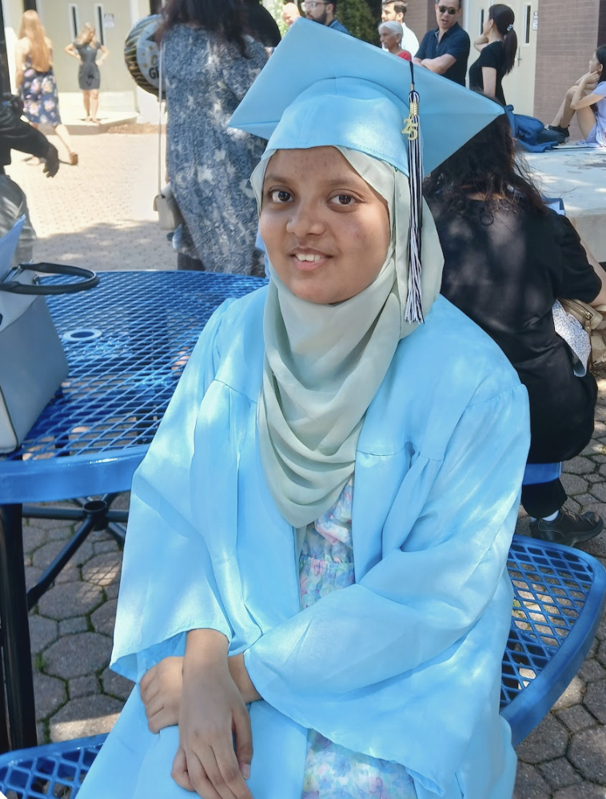
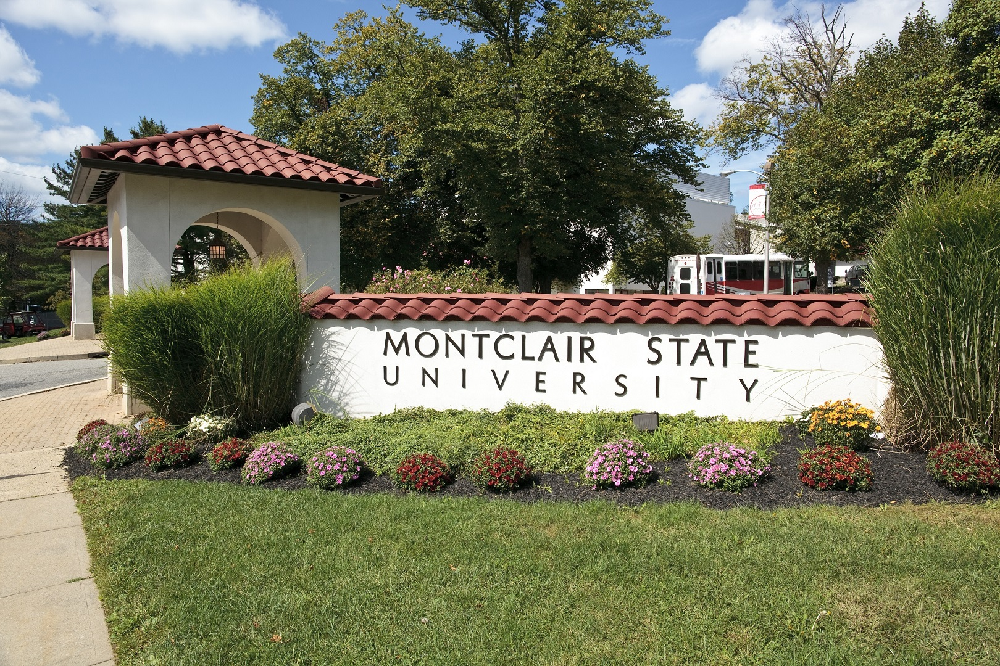
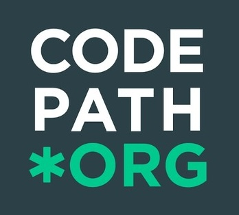
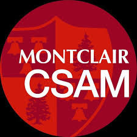

I’m a computer science student with a growing passion for building things through code. I’m currently focused on learning JavaScript and strengthening my fundamentals as I work toward becoming a software engineer. I enjoy problem-solving, exploring new technologies, and turning ideas into real, functional projects.
Major: Computer Science
Minor: Data Science
GPA: 3.9
Activities & Societies: Girls Who Code, Computing Club, Computer Networking - Cybersecurity Club
Graduation Year: 2029


